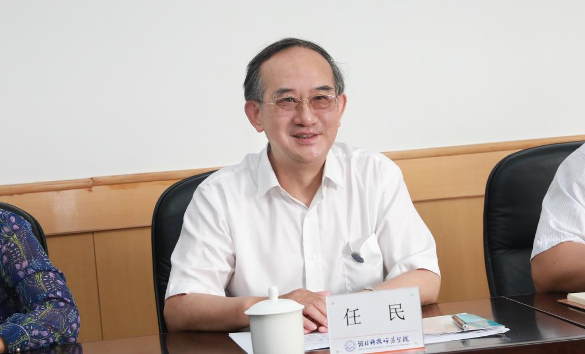

学院动态
- 学院动态
- 通知公告
秦皇岛市委副书记丁伟到我校调研
来源：党委宣传部 作者：孙艳敏、马德强/文 朱洪亮 孙艳敏 李洪泊/图 发布时间 ：06-14
2019年6月12日下午，秦皇岛市委副书记丁伟就农业技术应用推广、校地合作事宜到我校调研指导工作。市教育局长刘红军、市科技局局长薛顺平、市农业农村局副局长曹滨陪同调研。我校党委书记任民，党委副书记、校长郭鸿湧，副校长杨越冬及科研处、新农村发展研究中心、园艺学院、动科学院、农生学院、食品学院的主要负责同志出席了座谈会。

任民在座谈会上讲话
任民在讲话中表示，一是衷心感谢。衷心感谢市委、市政府长期以来对科师教育改革发展事业的大力支持，感谢丁伟副书记在百忙中亲自来到科师进行面对面、点对点的调研指导，感谢秦皇岛市直相关部门多年来对科师的关心支持。二是热情期盼。学校三次党代会确定了建设特色鲜明高水平应用型大学，服务三农、服务职教、服务海洋的发展定位，将努力建强农业类学科群、建优师范类学科群、建成海洋类学科群。热情期盼与秦皇岛市对接，从服务“三农”起步，努力探索出特色鲜明的应用型大学建设之路。三是精诚合作。就下一步工作，任民表示，一要成立学校与秦皇岛市委市政府对接团队，形成比较完善的对接体制；二要谋划起草合作框架，稳步推进各方面工作落实；三要起步建成第一批专家工作站，实现把科师服务“三农”的科研团队建在产业链上，建在产业链顶端的龙头企业中去，从而构建起政校企有机联系的合作机制。
丁伟在座谈会上讲话
丁伟副书记在讲话中充分肯定了我校多年来在服务地方经济社会发展中做出的积极贡献，他希望科师一如既往地支持秦皇岛市农业、农村发展，同时还要更多地关注秦皇岛市经济社会发展并就科师如何更好的发挥农科特色优势，发挥高校政产学研作用，助力秦皇岛农业经济建设，投身到秦皇岛“三农”工作的主战场，以及地校下一步合作的方法、思路、路径等方面提出了明确的指导意见。
丁伟表示，秦皇岛市委、市政府历来高度重视农业农村经济发展，科师在助力地方农业农村发展方面有着得天独厚的技术、人才、信息优势，秦皇岛市农业农村发展需要政产学研用相结合，希望地校双方在原有工作基础上，建立全面的、高层次的合作框架，做好项目的顶层设计，进一步优化配置好各方面的资源。希望科师能够积极发挥智库作用，在化解秦皇岛市农业农村发展短板问题上主动作为，为秦皇岛市乡村振兴工作提供人才和科技支撑。
就进一步深入推进地校合作，助力地校建设发展，丁伟提出，一是政府与学院之间的交流合作在现有合作基础上进一步升级，建立地校协调对接体制。二是搭建政府、学校、企业全方位战略合作平台， 携手推动科技成果落地转化。三是创新科技帮扶形式。进一步拓展帮扶空间，深化帮扶层次，提升帮扶水平。
会场
座谈会上，杨越冬从构建创新链、精选特派（团）员、建立示范基地、完善管理制度、创新服务机制等方面，汇报了学校服务秦皇岛市“三农”的工作情况，提出了下一步校地合作的总体思路、设想和建议。
刘红军在讲话中表示，科师是驻秦的第一所本科院校，也是与秦皇岛市经济社会发展联系最为紧密的高校。当前，科师的科研成果已在秦皇岛市遍地开花，将进一步做好对接服务，加大校地合作的政策扶持力度，同时借助科师的科技成果，加强“三产融合”建设，为地方培养“三产融合”的科技人才。
薛顺平用“科师接地气，地方党委政府格外重视；科师有情怀，农村百姓格外依赖；科师善创新，秦皇岛城市跃升离不开”三句话高度评价了科师各方面的工作。他希望我校在秦皇岛市生命健康产业创新示范领域能够闯出一条新路子。
曹滨介绍了秦皇岛市“三农”工作相关情况，充分肯定了我校在秦皇岛市乡村振兴中发挥的重要作用。就主动对接搭建好科师这一载体平台，曹滨表示，一是加强沟通协调联系，二是打造服务平台，三是不断提升“三农”队伍水平，四是加快新技术新成果转化应用，让科师专家教授和广大学子扎扎实实的把“论文写在秦皇岛的大地上”。
与会专家就政校企深入合作，共同推进秦皇岛市经济社会发展进行了深入交流和探讨，并提出了一系列富有建设性的建议和意见。（编辑：孙艳敏 审核：唐代清）
参观校史馆
- 上一条：我校隆重举行2019届毕业生毕业典礼
- 下一条：我校发挥科技优势助力大樱桃产业振兴
【关闭】